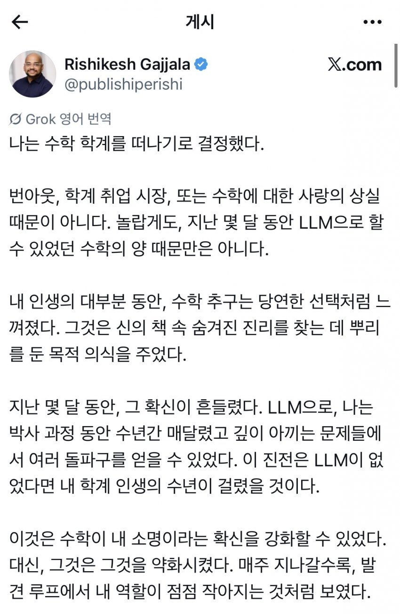
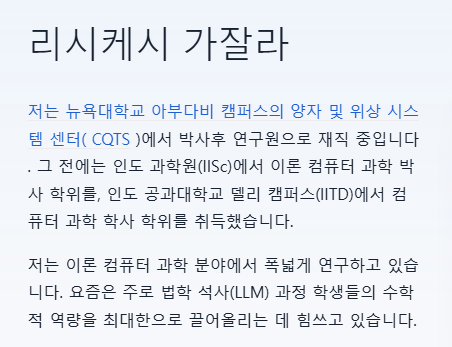

요약:
대충 자기가 최근 이뤘던 수학적성과에서 LLM이 없었으면
수년이 걸렸을걸 AI가 많이 도와주는걸 보면서,
점점 수학적 발견에서 자신의 역할이 줄어든다고 느꼈다함
대신 이렇게 AI가 성능이 향상되다보면
앞으로는 검증이 병목인 세상이 올거라서,
이제는 수학증명을 Lean으로 형식화해서
옮기는걸 전문으로하는 연구소로 이직한다는 내용


요약:
대충 자기가 최근 이뤘던 수학적성과에서 LLM이 없었으면
수년이 걸렸을걸 AI가 많이 도와주는걸 보면서,
점점 수학적 발견에서 자신의 역할이 줄어든다고 느꼈다함
대신 이렇게 AI가 성능이 향상되다보면
앞으로는 검증이 병목인 세상이 올거라서,
이제는 수학증명을 Lean으로 형식화해서
옮기는걸 전문으로하는 연구소로 이직한다는 내용
댓글
수집 당시 댓글 43개
ahalfsodaus · 3 일 전
그럼 뭐하시게요...? 그게 제일 궁금함
CP병 · 3 일 전
이직한대
overflow승희 · 3 일 전
AI활용
아니이개외안되 · 3 일 전
ai를 꼬붕으로 쓰다가 이젠 ai 시다하러 갈거래
딸기맛우유 · 3 일 전
거기도 곧 AI한테 따일거같은데.
동행복권 · 3 일 전
그럼 AI 시다시다 로 이직함
레드머킈 · 3 일 전
학위가 전산 쪽이네. 그리고 번역 이상한 거 보니 아직은 할게 많아 보이네.
몬스터에너지 · 3 일 전
Lean은 수학적 증명을 보조하는 프로그래밍 언어라네
5783578965 · 3 일 전
걍 ai 시대에 맞춰서 이직하는김에 "링크드인 스타일"로 과장되게 쓴글 같은데 ㅋㅋㅋㅋ
자라칩 · 3 일 전
그 짤방ㅋㅋㅋㅋ
불멸의러너 · 3 일 전
저는 아파트에서 시큐리티를 담당하는 총괄 책임자로써 30년간 근무하였습니다.
닼린이 · 3 일 전
백수시고
라피모프 · 3 일 전
링크드인 글들은 너무 오그라듦
물젖참젖빅젖원추젖사발젖 · 3 일 전
바둑에서 알파고가 인간을 압도했을 때 바둑이 끝난 것처럼 보였지만 지금은 바둑의 기풍을 연구해서 더 강해진 기사들이 다투고 있잖아 수학도 도구든 공동 연구자든 AI와 같이 갈 수 없을까?
MVP129 · 3 일 전
호들갑 맞음. 저사람이 절필한거지 수학계는 활발함
이제시작입니다 · 3 일 전
바둑은 스포츠고 어쨋든 스포츠는 인간이 하는것에 의의를 두니까 생존이 가능한거고 수학은 사람이 만들든 ai가 만들든 의미가 없으니까 더 역할이 작아지는거지
볶음짬뽕 · 3 일 전
AI 때문이라고 단정지을 수는 없겠지만 AI 이전과 비교해서 바둑 시장 자체가 상당히 쪼그라든 것도 사실이라.
지나가던우주인 · 3 일 전
접바둑 두고있음
웬전도사 · 3 일 전
아인슈타인에게 챗gpt 준 이야기 재미있었가
진지한새끼 · 3 일 전
리시케시 잘가라
불멸의러너 · 3 일 전
LLM이 없는 시대에 태어났을 뿐인 범부여
이모티콘혐오자 · 3 일 전
수학전공은 이제 그냥 취미 영역으로 가버리겟네
모닝프로틴 · 3 일 전
대 LLM 시대
유메노아이카찹살젖통 · 3 일 전
결국 인간이 확인해서 책임져야해서 검증할수 있는 인력은 살아남음
ye · 3 일 전
걍 돈되는거 하겠다 이거네
nunna · 3 일 전
뭔 소리여 쉽게 설명좀 해줘
MG · 3 일 전
명제에 대한 해답은 llm이 다 해줘서 일거리가 없어지니까 그나마 사람 일거리가 많아질 검증 쪽으로 옮기겠단 얘기인가봐
늒네와쪄염 · 3 일 전
계산기 역할은 ai가 더 잘하니까 이제 그만두고 그 결과값이 맞는지 검증하는 역할로 갈아탄다는거지
선장입수 · 3 일 전
이제 이직하는곳은 AI가 뽑은 증명을 검증하는 연구소인가보네
ytrewq · 3 일 전
연구소에선 지가 ai 보다 나을줄 아나봄
dfsa9s0 · 3 일 전
특이점이 온다
ㅆㄷㅇㅎ · 3 일 전
얼마전에 교수님 찾아 뵈었는데 비슷하면서 다른 고민 하시더라 학회겸 해서 엘에이 가면서 찾아뵈었는데 앞으로 수학자가 받아드릴 ai와의 연구에 대해 굉장히 긍정적이면서 한편으로 좋은 수학자라는건 결국 옛날과 다를게 없지만 많은 학생들이 더 많이 이 길을 포기할거같다고 오랜만에 뵙는 저녁 식사 자리였지만 여러 생각이 들었음
SOL반도체TOP2 · 3 일 전
리시케시 잘가라
2억파이어 · 3 일 전
그럼 수학업계를 안떠난거 아님?
채권팔이소년 · 3 일 전
내가 수학자면 존나 기쁠 것 같은데, 지금 프로그래밍할 때도 존나 기쁜데, 내가 하면 수개월 걸릴거 딸깍하먄 나와서 모든 생각한걸 다 할 수 있으니까.
쓸데없는거설명하는거좋아함 · 3 일 전
수학적인 진실을 찾는 그 근원적인 이유가 뭘까 라는 생각을 해봤음 사실은 수학적인 진실을 "내가"찾아내고 싶었던게 아닐까? "이 사실을 내가 찾아냈다" 라는 업적을 남기고 싶은데 이제 그것은 힘들고 "내가 질문했다" 라는 업적만 남길 수 있게 된거잖아?
켄트지 · 3 일 전
그것도 사바사일거같긴 한데 네가 말한거처럼 생각했던 사람이면 확실히 현타오긴 하겠다
채권팔이소년 · 2 일 전
찾는 즐거움뿐만 아니라 근원적 세상의 진실에 가까워지고 싶은 마음도 있을 것 같은데, 사람은 다 다르니까 그럴수 있겠네
proyniss · 3 일 전
프로그래밍은 내가 생각한 것을 '내가 만들었다' 도 중요하지만, '내가 생각한 것이 실제로 만들어졌다' 만으로도 만족이 되기 때문이 아니까 싶음.
아침밥 · 3 일 전
시시케밥니뮤ㅠㅠㅠㅠ
고추건조기 · 3 일 전
Lean을 형식화... 뭐..?
병신이니이해부탁 · 3 일 전
나도 ai하는 사람인데 이론연구쪽이 너무 포화되고있어서 빡대가리면 그냥 다시 최적화로 눈을 낮춰야하나 생각중… 그나마 현장이랑 가까워서 그쪽은 본인이 좀 학술적 에고를 낮추면 밥은 더 오래빌어먹지 않을까 싶다
보끔우동 · 3 일 전
이세돌도 그래서 바둑 떠났지